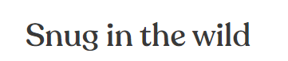
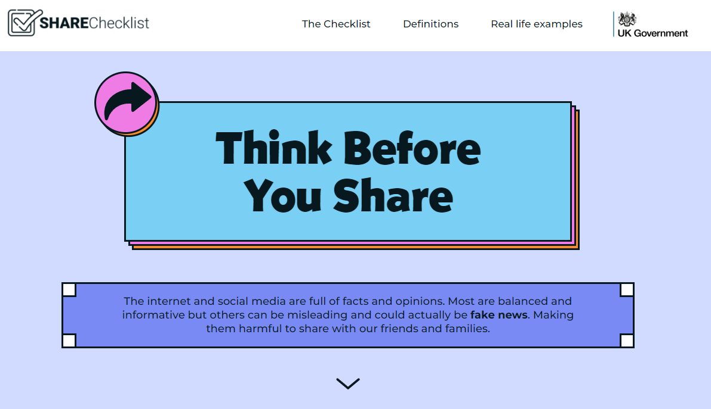

Week
seven.
IL Learning
Task 1
- Preparation - Reflecting on some of the decisions I have made in my creative process, I can see a lot of influence from
websites I visit and the kind of neutral colours I enjoy when I see adverts with lovely fonts. One of the places I often
see nice typescript used is the ones used on instagram adverts. There is certainly a heavy influence of good design on
Instagram and I consume content on there everyday. One of the things that sticks out to me is the brad "snug", who's
adverts I see quite a lot, and I enjoy their typography and clean look.

- Incubation - I tend not to brainstorm on projects, it just isn't the best way for my brain to work. I often come up
with ideas when I am inspired by the things around me, when I'm doing mundane, day-to-day tasks. I have a notes app on
my phone which is full of notes from things I see in the world around me and I take pictures, notes and quick drawings
if I am inspired by something at the time.
- Ideation - My "AHA!" moment was when I seen the website that I spoke about in week one, about the lonliness epidemic.
I was really amazed at how something could really pull me in and teach me about something I otherwise would not have
went out my way to learn about or engage with (because it was US based, especially). It made me realise that we
can use these kinds of media to engage people in important topics and grab their attention and hold it, all through
different types of media. It gave me a lot of my ideas and made me want to stick with the topic because it's something
that is important to me, and I want others to realise the risks, too.
- Evalution:
1. Is it worth persuing: Yes! I have not had any doubt in my mind that the topic of misinformation is an important topic
to cover, teach and create awareness around.
2. Has it been done too many times before? If anything, not enough. Not in this way at least. With the massive shake up
with Twitter/X recently, and the misinformation aound Covid, elections and wars, I believe now is a great time to push the
narrative even further and create resources that are accessible and pleasent to use.
3. Are there necessary changes I could make? There is always room for improvement and changes throughout the creative process.
at this moment, I am happy with the path this is taking and I have scaled back a few of my initial ideas due to time and
technical constraints. But these are always on the back burner if there is enough time to add!
Task 2
These are the images on internet matters, on a page names "learn what fake news is". The image itself is used for aesthetic purposes,
but in my opinion I think it's poorly executed. I don't really understand what the image is trying to show? "do not reply"? It's not a clear image and
there could be a better image used in place that is informative and also aesthetically pleasing, such as a simple infographic.

Here is an image that is pleasant to look at, and is used in a way to actually convey the information. It has cool colours, that make you feel at ease, and has a "fun" feel to it. This helps with making the conventionally "boring" topic of misinformation online feel more pleasant and aesthetically pleasing.
They have used this type of image use throughout the webpage to keep users engaged in the content.

Here they are using images to create memorable ways to remember this information.
Bright, bold and easy to read allows us to remember things better.
Lab work
Task one
Insert content
Task two
Insert content